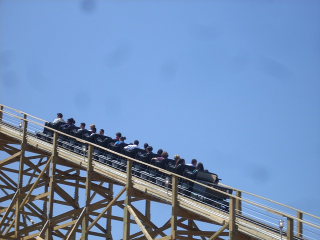
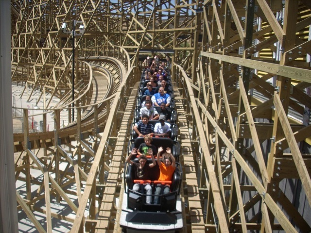
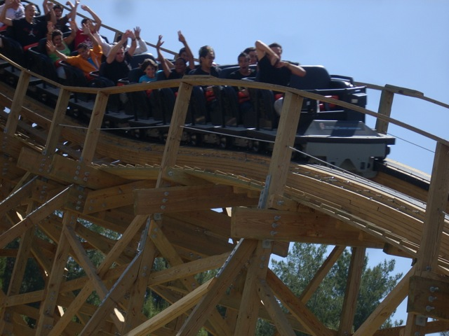
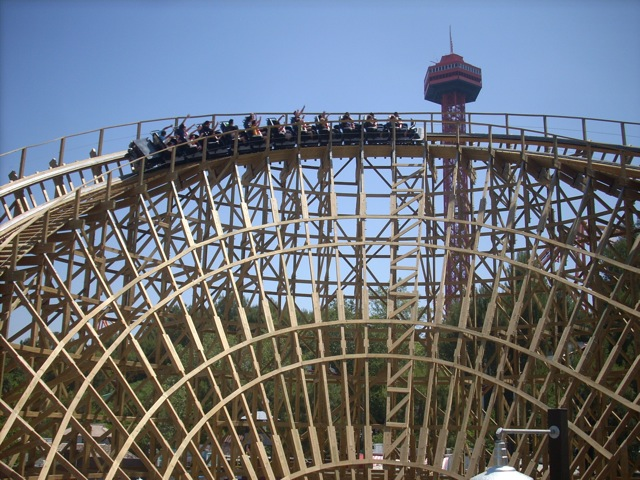
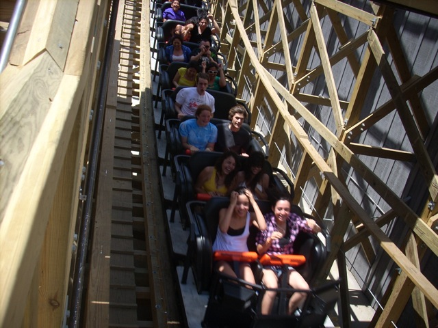
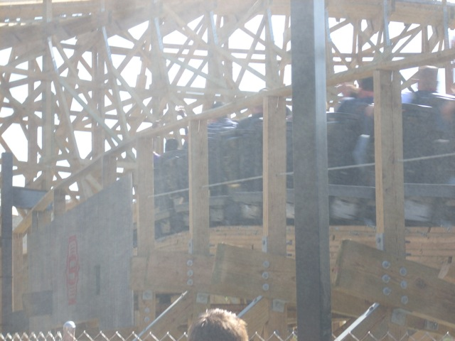

Terminator Opening Day
 Ok, so we are here today for one thing. (And so are all these other people.)
Ok, so we are here today for one thing. (And so are all these other people.)
 Yep. That would be the opening of Terminator.
Yep. That would be the opening of Terminator.
=
Up the lifthill these new riders go.

And off they go into a big pit of wooden madness!!!

Ok. The ride was quite good. It had lots of speed, lots of fun twisty turns and even a few pops of airtime. This is quite a good addition to Six Flags Magic Mountain.
 Even though the line was 2 hours long, I managed to get on it in less than 5 minutes thanks to the Single Riders Line.
Even though the line was 2 hours long, I managed to get on it in less than 5 minutes thanks to the Single Riders Line.
Come on Six Flags. Koopa Troopa sucks. Why can't you put Yoshi on that sign?
Well, there goes my sampling fun in the Candy Store.
First off, why is this in the Terminator Gift Shop and Second of all, why can't they remember that they turned X into X2?
This is why I don't wear hats.
Oh yeah. Now Six Flags has an official M&M Staircase.

Ok. Back to Terminator.
I see a random filthy jeep on a completely clean concrete slab.
 First Drop Madness!!!!!
First Drop Madness!!!!!
 Oh yeah. I forgot to tell you. Terminator has FIRE!!!!!!
Oh yeah. I forgot to tell you. Terminator has FIRE!!!!!!

"I'M CHRISTIAN BALE!!!!! GET THE F**K OFF MY RIDE!!!!!!!!!!!!"
I'm not sure how this yellow gunk got here, but I'm pretty sure Christian Bale is somehow responsible.

Terminator through the mist!!! To see our Terminator Raw Footage, click here.
Ha Ha. Stupid Backwards Security Camera.
Get with the times Six Flags. Screw Collosus. It's all about Terminator!!!
Back in my day, this is how we drove cars.
Wait! Are they talking about Six Flags Magic Mountain or Six Flags Discovory Kingdom?
These M&Ms are playing the game. Therefor, they get Six Flags.
 Despite what you may be thinking. I'm actually not the danger.
Despite what you may be thinking. I'm actually not the danger.
 This is the real danger. (No, I'm not talking about the blurry photo.) I'm talking about big groups of 20 that are all using Qbots. Ok, It's fine to use the Qbot. You payed for it and you have the right to go ahead. But when you are a group of 20 all using the Qbot, then you're just being a bunch of assholes. It's also even more annoying when they're not eveing using Qbots, but instead are using Handicapped Passes. I don't even think a single one of those twenty assholes was handicapped in any way. At least when Disney has a handicapped pass, they limit you to only using it on six people. This group was more than three times past that limit!!!! So, that's something you could learn from Disney. But the good news was that X2 at night was awsome.
This is the real danger. (No, I'm not talking about the blurry photo.) I'm talking about big groups of 20 that are all using Qbots. Ok, It's fine to use the Qbot. You payed for it and you have the right to go ahead. But when you are a group of 20 all using the Qbot, then you're just being a bunch of assholes. It's also even more annoying when they're not eveing using Qbots, but instead are using Handicapped Passes. I don't even think a single one of those twenty assholes was handicapped in any way. At least when Disney has a handicapped pass, they limit you to only using it on six people. This group was more than three times past that limit!!!! So, that's something you could learn from Disney. But the good news was that X2 at night was awsome.
Home